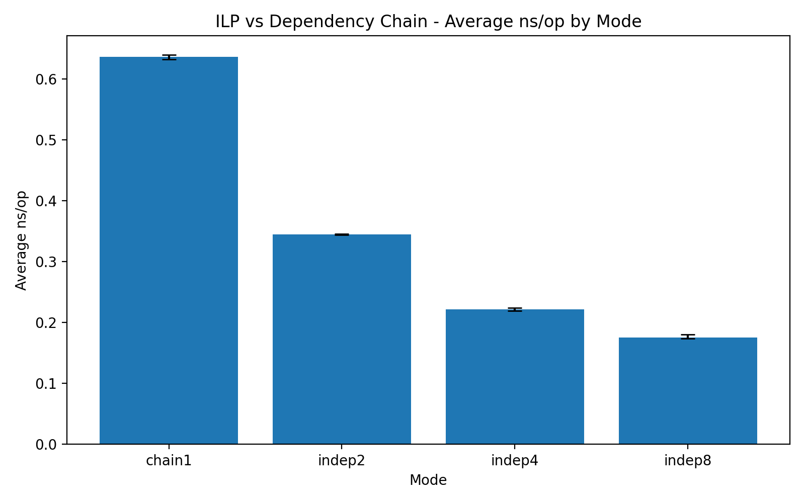

ILP vs Dependency Chain — Why the Same Work Can Be 3.6× Faster¶
When studying CPU performance, you eventually encounter a surprising fact:
Two pieces of code performing similar arithmetic can differ in performance by several times.
This experiment demonstrates one of the most important underlying reasons:
Instruction-Level Parallelism (ILP)
Key Question¶
The central question of this lab is simple:
If the amount of arithmetic is similar, why does performance change so dramatically?
The answer is:
CPUs are not slow because there is a lot of computation. They are slow because dependencies prevent computation from overlapping.
Experimental Setup¶
We compare four variants of the same computation.
chain1 (pure dependency chain)¶
a = f(a);
- Every operation depends on the previous result
- Fully serialized execution
indep2¶
a = f(a);
b = f(b);
- Two independent streams
indep4¶
a, b, c, d evolve independently
indep8¶
a0 ~ a7 evolve independently
Results¶
Best ns/op¶
| mode | ns/op |
|---|---|
| chain1 | 0.63 |
| indep2 | 0.34 |
| indep4 | 0.22 |
| indep8 | 0.17 |
Speedup vs chain1¶
| mode | speedup |
|---|---|
| indep2 | 1.84x |
| indep4 | 2.88x |
| indep8 | 3.63x |
Plots¶
Best ns/op¶
Average ns/op¶

Interpretation¶
The results show a clear and consistent trend:
- Increasing the number of independent streams reduces
ns/op - Performance improves monotonically
- Gains diminish as hardware limits are approached
This behavior directly reflects how modern CPUs execute instructions.
Microarchitectural Analysis (perf)¶
chain1¶
- IPC: 1.82
- Backend bound: 65%
- Retiring: 30%
- Branch miss: ~0%
Interpretation:
- The CPU spends most of its time waiting
- Execution is dominated by dependency latency
- The pipeline is underutilized
indep8¶
- IPC: 5.79
- Backend bound: 1.6%
- Retiring: 95.7%
- Branch miss: ~0%
Interpretation:
- The CPU is almost fully utilized
- Independent streams allow the out-of-order engine to overlap work
- Execution becomes throughput-bound
What Changed?¶
The arithmetic did not change.
Only the dependency structure changed.
chain1¶
a → a → a → a
- Strict dependency chain
- No overlap possible
- Latency is exposed
indep8¶
a0 a1 a2 a3 a4 a5 a6 a7
- Independent streams
- Instructions can be issued in parallel
- Latency is hidden
Core Insight¶
Performance is determined more by dependency structure than by raw arithmetic work.
Latency vs Throughput¶
This experiment shows a transition between two execution regimes.
chain1¶
Latency-bound execution
- Each step waits for the previous one
- Pipeline stalls dominate
indep8¶
Throughput-bound execution
- Many instructions are in flight simultaneously
- CPU keeps execution units busy
Why This Matters¶
This single experiment explains several key optimization techniques.
Loop Unrolling¶
for (...) {
a = f(a);
}
↓
for (...) {
a0 = f(a0);
a1 = f(a1);
a2 = f(a2);
a3 = f(a3);
}
👉 Reduces dependency depth 👉 Increases ILP
SIMD / Vectorization¶
👉 Processes multiple independent values simultaneously 👉 Hardware-level ILP
Instruction Scheduling¶
👉 Reorders instructions to reduce dependency stalls
Branchless Code¶
👉 Reduces pipeline disruption 👉 Keeps execution units busy
Important Observation¶
The improvement is significant:
0.63 ns/op → 0.17 ns/op
≈ 3.6× faster
This is not a minor optimization.
It is a fundamental shift in execution behavior.
Limitations¶
This benchmark is intentionally simplified.
- No meaningful memory access
- No branch-heavy logic
- Pure integer computation
Real-world workloads involve:
- cache effects
- memory latency
- control flow
- instruction mix diversity
However, this simplicity is what makes the core effect clearly visible.
Final Conclusion¶
CPUs are often not limited by how much work they perform, but by how that work is structured.
And more importantly:
Removing dependencies allows CPUs to exploit massive hidden parallelism.
Next Step¶
The natural continuation of this topic is:
Loop Unrolling
Because:
It is the simplest and most direct way to transform a dependency chain into parallel work.